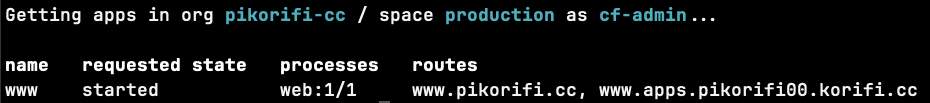

Bill of Materials for the Raspberry Pi Cluster Link to heading
- (1) Raspberry Pi 5 (8gb)
- (1) SanDisk 128gb
- (1) USB-C, right-angle, “HotNow” brand cables
- (1) 1-foot CAT6 flat ethernet cables
- (1) Ubiquiti Flex Mini switch
- (1) Official Raspberry Pi 5 Charger
- (1) Raspberry Pi 5 case
- (1) DeskPi 7.84-inch Touch Screen
This is a slightly different setup than the last time. But only because my office is a mess, nothing else. Had zero power concerns or warnings.
Installing Ubuntu 24.04 on Raspberry Pi Link to heading
It’s September 2025, why am I using Ubuntu 24.04 when I was using 24.10 last time? Since 25.04 is available, 24.10 is no longer a viable option. I tried with 25.04 but I ran into two unexpected problems.
The first problem is that the cgroup settings that were handled in 24.10, were not handled in 25.04. That was easy enough to work through because we’ve had to do that in the past.
The second problem was that I couldn’t get the qemu emulation to work at all, so I could never get kpack to work.
I didn’t want to spend any more time investigating because of other pressing deadlines.
So, I backed up to 24.04, the latest LTS release. I still use the Raspberry Pi Imager.
Same as before, edit the settings before writing the image:
- Configure the hostname
- Set country
- Add user (dashaun)
- Enable SSH server on boot
- Add public key for SSH auth
Update to the latest Link to heading
After starting up the Raspberry Pi from the USB, I’m able to login to it remotely. This time I did have a little monitor attached to the Raspberry Pi so I could see when it was fully booted and at the command prompt.
On first login, do all the updates!
sudo apt update
sudo apt upgrade -y
sudo shutdown -r now
Tailscale Link to heading
I’m working from multiple networks, even at home I have multiple providers, so I need an easy way to connect to all my nodes. Lately I’ve been leaning into tailscale.
Right after I do the first reboot, I install tailscale:
curl -fsSL https://tailscale.com/install.sh | sh
sudo tailscale up
Requires authentication…
After authenticating and adding the device to my VPN, I’m feeling pretty good.
Setup K3s using K3sup Link to heading
I’ve got k3sup installed on my laptop. This needs to be ran from another device, not the Raspberry Pi that we are installing on.
There are no changes here, I’m using the same command I’ve used in the past.
k3sup install --ip 100.81.187.23 --user dashaun --k3s-extra-args '--disable traefik' --merge --local-path ~/.kube/config --context pikorifi
# Validate the single-node cluster
kubectl get nodes -o wide
I used the VPN ip address of the node so I can use the KUBECONFIG from anywhere on my VPN.
NAME STATUS ROLES AGE VERSION INTERNAL-IP EXTERNAL-IP OS-IMAGE KERNEL-VERSION CONTAINER-RUNTIME
pikorifi00 Ready control-plane,master 7m24s v1.33.4+k3s1 10.14.1.18 <none> Ubuntu 24.04.3 LTS 6.8.0-1038-raspi containerd://2.0.5-k3s2
At this point, things are very similar to before. But, last time we were using Kubernetes v1.31, this time its v1.33.
Installing and Configuring Korifi on Kubernetes Link to heading
The installation instructions that I’m following.
I use direnv and bitwarden and configured my .envrc
export BW_SESSION=$(bw unlock --raw)
export ROOT_NAMESPACE="cf"
export KORIFI_NAMESPACE="korifi"
export ADMIN_USERNAME="cf-admin"
export BASE_DOMAIN="pikorifi00.korifi.cc"
export GATEWAY_CLASS_NAME="contour"
export DOCKERHUB_USERNAME=$(bw get username dockerhub-access-token)
export DOCKERHUB_PASSWORD=$(bw get password dockerhub-access-token)
Install Cert-Manager Link to heading
kubectl apply -f https://github.com/cert-manager/cert-manager/releases/download/v1.18.2/cert-manager.yaml
Install Kpack Link to heading
kubectl apply -f https://github.com/buildpacks-community/kpack/releases/download/v0.17.0/release-0.17.0.yaml
Kpack still doesn’t deliver ARM64 images yet. With Kubernetes v1.31 I was able to deploy a daemonset that would install qemu on every node of the cluster.
Something has changed. That solution no longer works, and again, I didn’t have time to figure out the reason.
In order to make that kpack install work, I had to setup qemu on each node manually, but it’s super easy.
# On each K3s node
sudo modprobe binfmt_misc
sudo apt install -y qemu-user-static
Almost immediately after finishing that install, the kpack deploy becomes healthy.
That was the big change from my last journey down this path. Some of the steps are the same as last time. I’m just copying and updating them, so I/we don’t have to jump back and forth.
Install Contour Link to heading
kubectl apply -f https://raw.githubusercontent.com/projectcontour/contour/release-1.33/examples/render/contour-gateway-provisioner.yaml
kubectl apply -f - <<EOF
kind: GatewayClass
apiVersion: gateway.networking.k8s.io/v1
metadata:
name: $GATEWAY_CLASS_NAME
spec:
controllerName: projectcontour.io/gateway-controller
EOF
Dynamic provisioning
Metrics Server Link to heading
The Kubernetes Metrics Server got installed with k3s so we are moving along, same as last time.
Install Service Bindings Controller Link to heading
kubectl apply -f https://github.com/servicebinding/runtime/releases/download/v1.0.0/servicebinding-runtime-v1.0.0.yaml
Create namespaces: Link to heading
cat <<EOF | kubectl apply -f -
apiVersion: v1
kind: Namespace
metadata:
name: $ROOT_NAMESPACE
labels:
pod-security.kubernetes.io/audit: restricted
pod-security.kubernetes.io/enforce: restricted
EOF
cat <<EOF | kubectl apply -f -
apiVersion: v1
kind: Namespace
metadata:
name: $KORIFI_NAMESPACE
labels:
pod-security.kubernetes.io/audit: restricted
pod-security.kubernetes.io/enforce: restricted
EOF
Add container registry credentials: Link to heading
kubectl --namespace "$ROOT_NAMESPACE" create secret docker-registry image-registry-credentials \
--docker-username="$DOCKERHUB_USERNAME" \
--docker-password="$DOCKERHUB_PASSWORD"
I’m using DockerHub
SSL/TLS Link to heading
I’m still cool with self-signed certificates for now.
But with this example, I’m going to use cloudflared and talk through making this Raspberry Pi public to the world.
Install Korifi with Helm Link to heading
helm install korifi https://github.com/cloudfoundry/korifi/releases/download/v0.16.0/korifi-0.16.0.tgz \
--namespace="$KORIFI_NAMESPACE" \
--set=generateIngressCertificates=true \
--set=rootNamespace="$ROOT_NAMESPACE" \
--set=adminUserName="$ADMIN_USERNAME" \
--set=api.apiServer.url="api.$BASE_DOMAIN" \
--set=defaultAppDomainName="apps.$BASE_DOMAIN" \
--set=containerRepositoryPrefix=index.docker.io/dashaun/ \
--set=kpackImageBuilder.builderRepository=index.docker.io/dashaun/kpack-builder \
--set=networking.gatewayClass=$GATEWAY_CLASS_NAME \
--wait
These are my values, update
containerRepositoryPrefixandkpackImageBuilder.builderRepositorywith your values.
Takes a couple of minutes for everything to resolve, but we used --wait, don’t panic!
Post-Install Config Link to heading
Instead of just running this locally, I want to make it public. I’m not just making the apps public, I’m also making the API public! That will allow my Twitch community, to use my Korifi cluster! Stay tuned for more on that later!
Cloudflared Link to heading
On my laptop, I have the cloudflared CLI installed.
The first thing I did was create a tunnel with cloudflared.
cloudflared tunnel create javagrunt
From my laptop, not on the Raspberry Pi
Tunnel credentials written to /Users/dashaun/.cloudflared/89b6e689-2786-44a4-b607-7ee3e3aa6ef8.json. cloudflared chose this file based on where your origin certificate was found. Keep this file secret. To revoke these credentials, delete the tunnel.
Created tunnel javagrunt with id 89b6e689-2786-44a4-b607-7ee3e3aa6ef8
That ID is very important.
Then I add that secret to the kubernetes cluster. This isn’t the most secure way to handle secrets. I’ve been using SOPS for secrets in production.
kubectl create secret generic tunnel-credentials \
--from-file=credentials.json=/Users/dashaun/.cloudflared/89b6e689-2786-44a4-b607-7ee3e3aa6ef8.json
Points to the file that was generated above
With that secret deployed to the cluster, now I can create the tunnel from Cloudflare directly to the Kubernetes cluster on my Raspberry Pi!
---
apiVersion: apps/v1
kind: Deployment
metadata:
name: cloudflared
namespace: default
spec:
selector:
matchLabels:
app: cloudflared
replicas: 1
template:
metadata:
labels:
app: cloudflared
spec:
containers:
- name: cloudflared
image: cloudflare/cloudflared:2025.9.0
args:
- tunnel
# Points cloudflared to the config file, which configures what
# cloudflared will actually do. This file is created by a ConfigMap
# below.
- --config
- /etc/cloudflared/config/config.yaml
- run
livenessProbe:
httpGet:
# Cloudflared has a /ready endpoint which returns 200 if and only if
# it has an active connection to the edge.
path: /ready
port: 2000
failureThreshold: 1
initialDelaySeconds: 10
periodSeconds: 10
volumeMounts:
- name: config
mountPath: /etc/cloudflared/config
readOnly: true
# Each tunnel has an associated "credentials file" which authorizes machines
# to run the tunnel. cloudflared will read this file from its local filesystem,
# and it'll be stored in a k8s secret.
- name: creds
mountPath: /etc/cloudflared/creds
readOnly: true
volumes:
- name: creds
secret:
# By default, the credentials file will be created under ~/.cloudflared/<tunnel ID>.json
# when you run `cloudflared tunnel create`. You can move it into a secret by using:
# ```sh
# kubectl create secret generic tunnel-credentials \
# --from-file=credentials.json=/Users/yourusername/.cloudflared/<tunnel ID>.json
# ```
secretName: tunnel-credentials
# Create a config.yaml file from the ConfigMap below.
- name: config
configMap:
name: cloudflared
items:
- key: config.yaml
path: config.yaml
---
# This ConfigMap is just a way to define the cloudflared config.yaml file in k8s.
# It's useful to define it in k8s, rather than as a stand-alone .yaml file, because
# this lets you use various k8s templating solutions (e.g. Helm charts) to
# parameterize your config, instead of just using string literals.
apiVersion: v1
kind: ConfigMap
metadata:
name: cloudflared
namespace: default
data:
config.yaml: |
# Name of the tunnel you want to run
tunnel: javagrunt
credentials-file: /etc/cloudflared/creds/credentials.json
# Serves the metrics server under /metrics and the readiness server under /ready
metrics: 0.0.0.0:2000
# Autoupdates applied in a k8s pod will be lost when the pod is removed or restarted, so
# autoupdate doesn't make sense in Kubernetes. However, outside of Kubernetes, we strongly
# recommend using autoupdate.
no-autoupdate: true
# The `ingress` block tells cloudflared which local service to route incoming
# requests to. For more about ingress rules, see
# https://developers.cloudflare.com/cloudflare-one/connections/connect-apps/configuration/ingress
#
# Remember, these rules route traffic from cloudflared to a local service. To route traffic
# from the internet to cloudflared, run `cloudflared tunnel route dns <tunnel> <hostname>`.
# E.g. `cloudflared tunnel route dns example-tunnel tunnel.example.com`.
ingress:
# The first rule proxies traffic to the httpbin sample Service defined in app.yaml
# This rule sends traffic to the built-in hello-world HTTP server. This can help debug connectivity
# issues. If hello.example.com resolves and tunnel.example.com does not, then the problem is
# in the connection from cloudflared to your local service, not from the internet to cloudflared.
- hostname: "api.pikorifi00.korifi.cc"
service: https://korifi-api-svc.korifi.svc.cluster.local
originRequest:
noTLSVerify: true
- hostname: "*"
service: http://envoy-korifi.korifi-gateway.svc.cluster.local:80
Here are the things you will want to change from that file above.
image: cloudflare/cloudflared:2025.9.0
Line 19, the latest
cloudflaredimage
tunnel: javagrunt
Line 77, the name of the tunnel
- hostname: "api.pikorifi00.korifi.cc"
service: https://korifi-api-svc.korifi.svc.cluster.local
originRequest:
noTLSVerify: true
- hostname: "*"
service: http://envoy-korifi.korifi-gateway.svc.cluster.local:80
Lines 97-102, exposes the API, exposes the gateway
This is so cool! But we aren’t done yet. I need make sure that Cloudflare knows how to handle the route.
Inside of Cloudflare, where I’m managing DNS, I’m adding two CNAME records for the API.
CNAME | api.pikorifi00.korifi.cc | 89b6e689-2786-44a4-b607-7ee3e3aa6ef8.cfargotunnel.com
CNAME | *.apps.pikorifi00.korifi.cc | 89b6e689-2786-44a4-b607-7ee3e3aa6ef8.cfargotunnel.com
The CNAME target is the
.cfargotunnel.com
Now I have a publicly available API for my Korifi foundation!
I also added Cloudflare Edge Certificates for *.apps.pikorifi00.korifi.cc and *.pikorifi00.korifi.cc.
The $10/month feels like a bargain to enable SSL certs for my Korifi API and all the apps that I deploy.
Use that sweet sweet API Link to heading
cf api https://api.$BASE_DOMAIN
Exposed with a valid SSL certificate
Setting API endpoint to https://api.pikorifi00.korifi.cc...
OK
API endpoint: https://api.pikorifi00.korifi.cc
API version: 3.117.0+cf-k8s
Not logged in. Use 'cf login' or 'cf login --sso' to log in.
So far, so good!
cf login
I’m presented with a list of all of the users in my ~/.kube/config and I choose the entry in the list associated to $ADMIN_USERNAME
API endpoint: https://api.pikorifi00.korifi.cc
1. admin
2. admin@k3d-korifi
3. cf-admin
4. pikorifi
Choose your Kubernetes authentication info (enter to skip): 3
Authenticating...
OK
API endpoint: https://api.pikorifi00.korifi.cc
API version: 3.117.0+cf-k8s
user: cf-admin
No org or space targeted, use 'cf target -o ORG -s SPACE'
This is working!
cf create-org pikorifi-cc
cf create-space -o pikorifi-cc production
cf target -o pikorifi-cc -s production
API endpoint: https://api.pikorifi00.korifi.cc
API version: 3.117.0+cf-k8s
user: cf-admin
org: pikorifi-cc
space: production
Production Link to heading
cf push www --docker-image dashaun/cc.pikorifi.www:latest
The app is now visible at https://www.apps.pikorifi00.korifi.cc with a valid SSL cert
That’s great, but YOU probably want to use your own domain. Korifi handles that too.
If you own pikorifi.cc you simply point your domain to the same tunnel!
CNAME | pikorifi.cc | 89b6e689-2786-44a4-b607-7ee3e3aa6ef8.cfargotunnel.com
CNAME | *.pikorifi.cc | 89b6e689-2786-44a4-b607-7ee3e3aa6ef8.cfargotunnel.com
Pointing to the same tunnel as above
Now tell Korifi that we want to handle traffic for that domain!
And setup a specific route.
Cloudflare provides free certs for the root and *.
cf create-shared-domain pikorifi.cc
cf create-route pikorifi.cc --hostname www
cf map-route demo pikorifi.cc --hostname www
The app is now visible at https://www.pikorifi.cc with a valid SSL cert
The API lets us look at the routes.
cf apps
Check the status of the apps in the target
organdspace
Getting apps in org pikorifi-cc / space production as cf-admin...
name requested state processes routes
www started web:1/1 www.pikorifi.cc, www.apps.pikorifi00.korifi.cc
I could remove the default route if I wanted to. I’m leaving it around so you can see it for yourself.
Check it out for yourself!
Conclusion Link to heading
Korifi keeps getting better. It handles a bunch of stuff for us. I’ll be pushing it to its limits in the coming months. Stay tuned! Also, make sure the follow the journey on my Twitch channel so you can play along!
As always, your feedback is welcomed.
Links Link to heading
Multi-Node Korifi on Raspberry Pi from scratch(YouTube) Multi-arch Spring Boot OCI images from anywhere with Paketo https://github.com/pikorifi-cc/cc.pikorifi.www Korifi Pragmatic approach to architecture (and development)